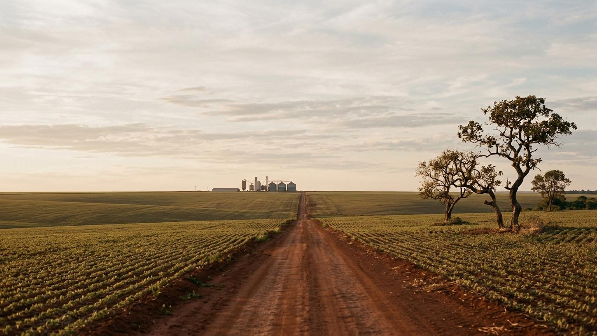

Book de plataforma de comunicação, julho de 2026
Plano de presença de marca no Cerrado
O que o plano contém
2

Sudoeste de Goiás. Seis cidades, doze lojas, quarenta anos de porta aberta. Imagem ilustrativa gerada para o exemplo.